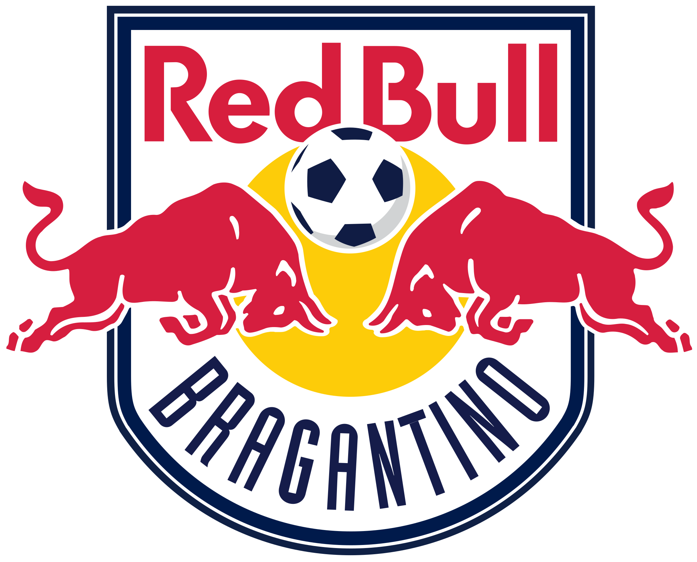
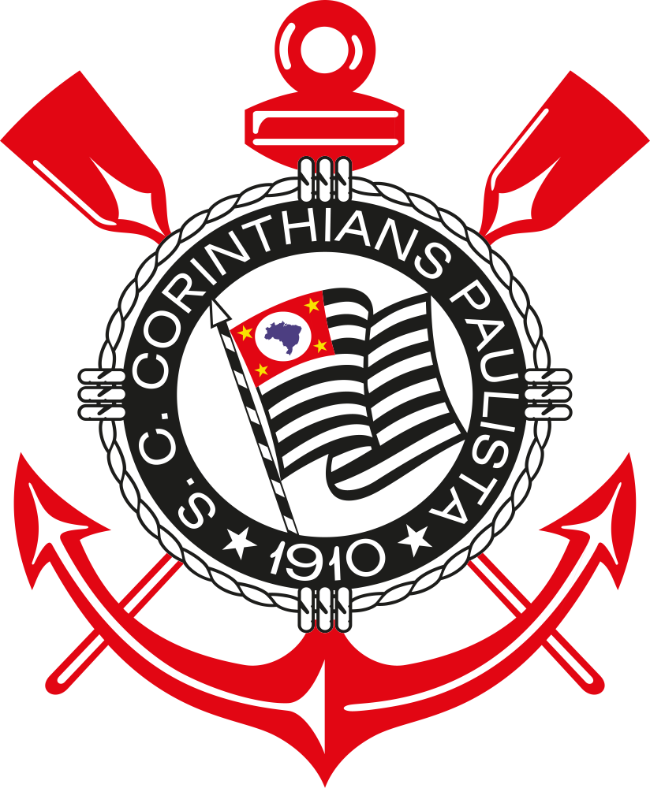

Santos Futebol Clube
⚫️⚪️
O Santos Futebol Clube, mais conhecido simplesmente como Santos, é um dos clubes de futebol mais
tradicionais e populares do Brasil, com uma rica história e uma legião de torcedores apaixonados.
Fundado em 14 de abril de 1912, na cidade de Santos, São Paulo, o clube conquistou diversos títulos
nacionais e internacionais ao longo de sua trajetória, tornando-se um dos maiores representantes do
futebol brasileiro no mundo.
Mascote: Peixe 🐟
Estádio: Vila Belmiro
Principais títulos:
- Brasileirão: 1961, 1962, 1963, 1964, 1965, 1968, 2002, 2004
- Libertadores: 1962, 1963, 2011
- Mundial de Clubes: 1962, 1963
São Paulo Futebol Clube
⚫️🔴⚪️
O São Paulo Futebol Clube, conhecido como São Paulo FC ou simplesmente São Paulo, é um dos clubes de
futebol mais tradicionais do Brasil, com uma vasta torcida e uma história vitoriosa. Fundado em 25
de janeiro de 1930, na cidade de São Paulo, o clube conquistou diversos títulos nacionais e
internacionais, destacando-se como um dos maiores do futebol brasileiro.
Mascote: Santo Paulo
Estádio: Morumbi
Principais títulos:
- Brasileirão: 1977, 1991, 2008
- Libertadores: 1992, 1993, 2005
- Mundial de Clubes: 2005
Red Bull Bragantino
🔴⚪️🔵 
O Red Bull Bragantino, conhecido como Bragantino, é um clube de futebol brasileiro com sede em
Bragança Paulista, interior de São Paulo. Fundado em 1928, o clube passou por diversas
transformações até se tornar uma das forças do futebol brasileiro nos últimos anos, com o
investimento da Red Bull.
Mascote: Touro 🐂
Estádio: Nabi Abi Chedid
Principais títulos:
- Campeonato Paulista Série A2: 2019
- Campeonato Paulista Série A1: 2020
Corinthians
⚫️⚪️ 
O Sport Club Corinthians Paulista, conhecido simplesmente como Corinthians, é um dos clubes de
futebol mais populares do Brasil. Fundado em 15 de setembro de 1910, na cidade de São Paulo, o clube
possui uma das maiores torcidas do país e uma rica história, marcada por conquistas nacionais e
internacionais.
Mascote: Timão
Estádio: Neo Química Arena
Principais títulos:
- Brasileirão: 1990, 1998, 1999, 2005, 2011, 2015, 2017, 2018
- Libertadores: 2012
- Mundial de Clubes: 2012
Palmeiras
🟢⚪️
O Sociedade Esportiva Palmeiras, conhecido como Palmeiras, é um dos clubes de futebol mais
tradicionais do Brasil. Fundado em 14 de agosto de 1914, na cidade de São Paulo, o clube possui uma
vasta história e uma torcida apaixonada. O Palmeiras é conhecido por suas diversas conquistas e por
ser um dos maiores clubes do futebol brasileiro.
Mascote: Periquito e Porco
Estádio: Allianz Parque
Principais títulos:
- Brasileirão: 1967, 1972, 1993, 1994, 2016, 2018, 2022
- Libertadores: 1999, 2020, 2021
- Mundial de Clubes: 1999